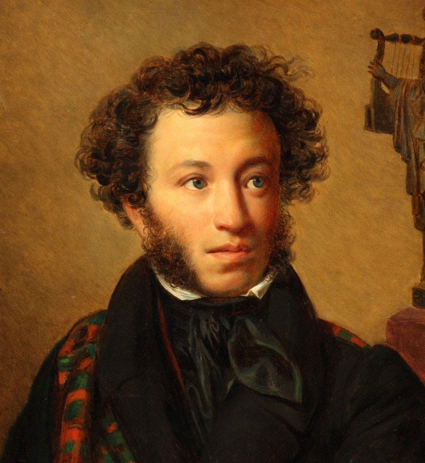

Я помню чудное мгновенье:
Передо мной явилась ты,
Как мимолетное виденье,
Как гений чистой красоты.
В томленьях грусти безнадежной,
В тревогах шумной суеты,
Звучал мне долго голос нежный
И снились милые черты.
Шли годы. Бурь порыв мятежный
Рассеял прежние мечты,
И я забыл твой голос нежный,
Твои небесные черты.
В глуши, во мраке заточенья
Тянулись тихо дни мои
Без божества, без вдохновенья,
Без слез, без жизни, без любви.
Душе настало пробужденье:
И вот опять явилась ты,
Как мимолетное виденье,
Как гений чистой красоты.
И сердце бьется в упоенье,
И для него воскресли вновь
И божество, и вдохновенье,
И жизнь, и слезы, и любовь.